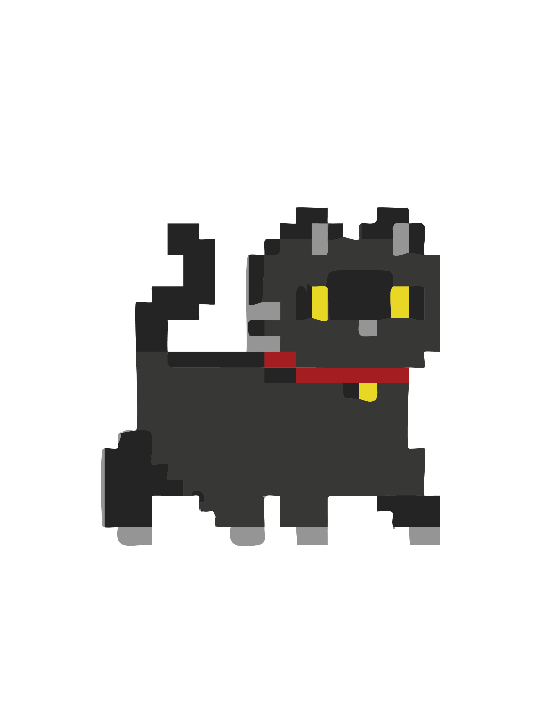

 This is Creature city. It has the highest population of critters in all of Critterverse. Critters come here to eat, shop, and be entertianed. My favorite thing to do in Creature city is to dumpster dive. BRB.. i smell a stinky dumpster in need of checking.
follow toba